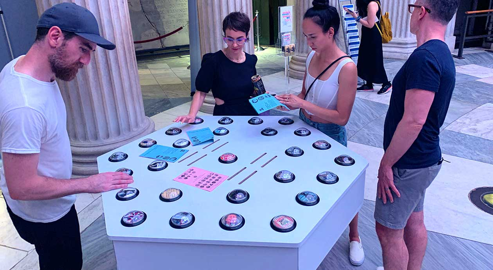
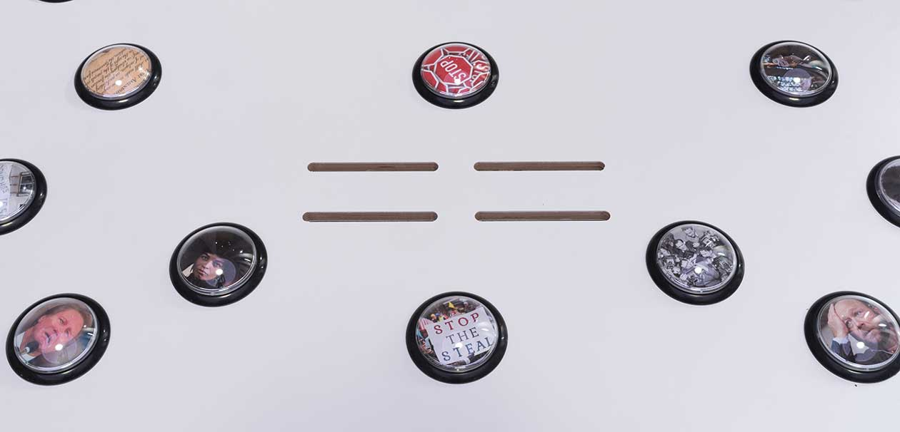

First Amendment
Congress shall make no law respecting an establishment of religion, or prohibiting the free exercise thereof; or abridging the freedom of speech, or of the press; or the right of the people peaceably to assemble, and to petition the Government for a redress of grievances.
Photo by John Berens
Lexa Walsh
Special thanks to Leo Knapp for technical assistance
. . . Which By Their Very Utterance . . . , 2022
Wooden game board, electronics, computer, sound, website, printed matter
48 inches by 30 inches by 48 inches
Artist Commentary
. . . Which By Their Very Utterance . . . is a physical, interactive audio experience for one or more players. Each button, when pressed, plays an audio clip related to freedom of speech. The inner circle of buttons offers long playing and polyphonic loops, while the outer circle provides short samples. The center button stops a loop. There are no explicit win conditions and players should combine freely!
The First Amendment has a rich history of being exercised in sound: the freedoms of speech, religion, press, assembly, and protest reverberate in song and spoken language. . . . Which By Their Very Utterance . . . is a playable game/musical instrument/sound station that explores ideas embedded in the First Amendment. These ideas take shape in audio samples from educational videos, religious and spiritual practices, newsrooms, speeches, and marches, from Black Lives Matter protests to Stop the Steal rallies. I’ve selected samples referencing First Amendment court cases, such as those popularly known as “Scabby the Rat,” regarding the twelve-foot-tall inflatable rat called Scabby that has been used as a symbol in union disputes, and “the Cursing Cheerleader,” regarding the high school student whose social media post got her kicked off the junior varsity squad, as well as a few musical interludes (where I am practicing “fair use”). Visitors can exercise their own freedom of expression by playing the work. As they weave contemporary and historic sounds, they are emboldened to explore our First Amendment rights and to reflect on and interrogate their contents. An accompanying zine and website (www.utterance.space) allow users to dig more deeply into these sounds.
This work invites courageous dialogue, curiosity, and fun. It also aims to promote equity, not only by inviting users’ participation and creativity but also through its varied content, to create new narratives that become ripe conversation starters. What do we uncover, for instance, when we juxtapose sounds from multiple religious practices, or play protests from opposing ideologies in tandem? I am particularly interested in the weaponization of cancel culture, a right-wing tactic that has been reclaimed by the left, often to its own detriment. Though it can be an effective tool for activism, it can also shut down meaningful exchange, reflecting the punitive culture and oppression many wish to overcome.
I’ve included clips from Fox News along with clips of progressive critic Dan Kovalik and other samples. We need to live in a society that ensures the right to open communication and the practice of it. Simply having these rights does not mean we know how best to wield them. Therefore, I’ve provided tips on active listening in the accompanying zine. With the freedom guaranteed by the First Amendment comes great responsibility.
Photo by John Berens
Curator Commentary
The First Amendment is a paradox. We retain the right to be heard, but not understood; we retain the right to speak, but also the right to misspeak; we retain the right to report, though not necessarily the truth. The amendment does not—and really, could it?—provide mechanisms to ensure comprehension, to parse truth from fiction, to authenticate. Indeed, the gulf between expression and knowledge is vast.
Somewhere between a musical instrument and a game of whack-a-mole, Lexa Walsh’s . . . Which By Their Very Utterance . . . lays these paradoxes bare and exposes the gap between the protection of one’s right to express and the ripples created by that expression. Walsh’s work treats all utterances as equally valid: protests against police brutality against Black people are on the same ground as cries of support for election falsehoods, recordings from court cases with oppositional outcomes, excerpts from cultural practices ranging from education to music to religion. The presumed neutrality of the audio tracks belies the inequities in the First Amendment—if everything is of equal standing, how can we reasonably find meaning in the cacophony?
Walsh’s work invites us to play these recordings by pressing large buttons. The more buttons the player presses, the more recordings play back, leading to a barrage of First Amendment–supported utterances. How we receive, interpret, and act upon these sounds is totally up to the player and their spectators. Not unlike the First Amendment, the work does not suggest why you might want to do this; it only presents you with the opportunity. Do you choose to engage playfully in order to have a little fun? Aesthetically, as if performing with a musical instrument? Methodically, so as to carefully consider each excerpt? With the spirit of a spoilsport to create chaos? Polemically, to draw attention to a particular utterance and its point of view? . . . Which By Their Very Utterance . . . distills the First Amendment to its essence, leaving us to find purpose and meaning not only in what we say but also in how we receive that uttered by others.
Lexa Walsh makes projects, exhibitions, publications and objects, employing social engagement, institutional critique, radical hospitality and community building. Her upbringing as the youngest child of fifteen informs her work, as does practicing collectivity while coming of age in the post-punk scene of the 1990’s Bay Area. Embedded in her practice, she works as an arts laborer, organizer, curator and archivist. Walsh has founded or co-founded several arts platforms, including the Heinz Afterworld Lounge, an experimental music venue; Toychestra, an all-women, all-toy instrument ensemble; Oakland Stock, a branch of the Sunday Soup crowdfunding network; and most recently, the Bay Area Contemporary Arts Archive, a platform for the preservation of arts ephemera. Walsh has also worked as an artist-in-residence and/or curator at a variety of arts institutions, including a term as Social Practice Artist-in-Residence at the Portland Art Museum, and several years as a curator and administrator at CESTA, a Czech art center. She holds an MFA from Portland State University’s Art & Social Practice program and a BFA from California College of Arts and Crafts.
1
Freedom of Religion, Speech, Press, Assembly, Petition
Congress shall make no law respecting an establishment of religion, or prohibiting the free exercise thereof; or abridging the freedom of speech, or of the press; or the right of the people peaceably to assemble, and to petition the Government for a redress of grievances.
2
The Right to Bear Arms
A well regulated Militia, being necessary to the security of a free State, the right of the people to keep and bear Arms, shall not be infringed.
3
The Housing of Soldiers
No Soldier shall, in time of peace be quartered in any house, without the consent of the Owner, nor in time of war, but in a manner to be prescribed by law.
4
Unreasonable Search and Seizure, Warrants, Probable Cause
The right of the people to be secure in their persons, houses, papers, and effects, against unreasonable searches and seizures, shall not be violated, and no Warrants shall issue, but upon probable cause, supported by Oath or affirmation, and particularly describing the place to be searched, and the persons or things to be seized.
5
Due Process, Self-Incrimination, Eminent Domain
No person shall be held to answer for a capital, or otherwise infamous crime, unless on a presentment or indictment of a Grand Jury, except in cases arising in the land or naval forces, or in the Militia, when in actual service in time of War or public danger; nor shall any person be subject for the same offence to be twice put in jeopardy of life or limb; nor shall be compelled in any criminal case to be a witness against himself, nor be deprived of life, liberty, or property, without due process of law; nor shall private property be taken for public use, without just compensation.
6
Rights of Defendents in Criminal Trial
In all criminal prosecutions, the accused shall enjoy the right to a speedy and public trial, by an impartial jury of the State and district wherein the crime shall have been committed, which district shall have been previously ascertained by law, and to be informed of the nature and cause of the accusation; to be confronted with the witnesses against him; to have compulsory process for obtaining witnesses in his favor, and to have the Assistance of Counsel for his defense.
7
Rights in Civil Cases
In suits at common law, where the value in controversy shall exceed twenty dollars, the right of trial by jury shall be preserved, and no fact tried by a jury, shall be otherwise re-examined in any court of the United States, than according to the rules of the common law.
8
Excessive Bails, Fines, or Punishment
Excessive bail shall not be required, nor excessive fines imposed, nor cruel and unusual punishments inflicted.
9
Additional Fundamental Rights of People
The enumeration in the Constitution, of certain rights, shall not be construed to deny or disparage others retained by the people.
10
Separation of Powers and Federalism
The powers not delegated to the United States by the Constitution, nor prohibited by it to the States, are reserved to the States respectively, or to the people.